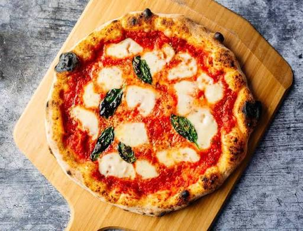

Margherita pizza

Margherita Pizza recipe
Make a classic Margherita pizza at home using simple, high-quality ingredients and a very hot oven.
Ingredients
- 1 pound store-bought or homemade pizza dough
- ½ cup crushed San Marzano canned tomatoes (mixed with a pinch of salt)
- 8 ounces fresh mozzarella cheese, sliced or torn
- A handful of fresh basil leaves
- 1 tablespoon grated Parmigiano-Reggiano cheese (optional)
- Extra-virgin olive oil for drizzling
- Sea salt
Instructions
- Preheat the oven:Turn your oven to its highest setting (500°F to 550°F / 260°C to 290°C). Place a baking stone or inverted heavy baking sheet inside during preheating for at least 30 to 60 minutes.
- Stretch the dough: Dust your work surface with flour. Gently press and stretch your room-temperature dough into a 12-inch round circle, leaving a slightly thicker outer rim for the crust. Transfer the dough to a floured pizza peel
- Add the toppings:Spread a thin layer of the crushed tomato sauce over the dough, leaving a small border for the edge. Sprinkle with Parmigiano-Reggiano if using, then distribute the fresh mozzarella pieces evenly. Drizzle lightly with olive
- Bake:Carefully slide the pizza from the peel onto the hot baking stone or steel. Bake for 5 to 8 minutes, or until the crust is golden and charred in spots and the cheese is bubbly.
- Garnish and serve:: Remove the pizza from the oven, top immediately with fresh basil leaves, a pinch of sea salt, and an extra drizzle of olive oil. Slice and serve hot.
back the Home page